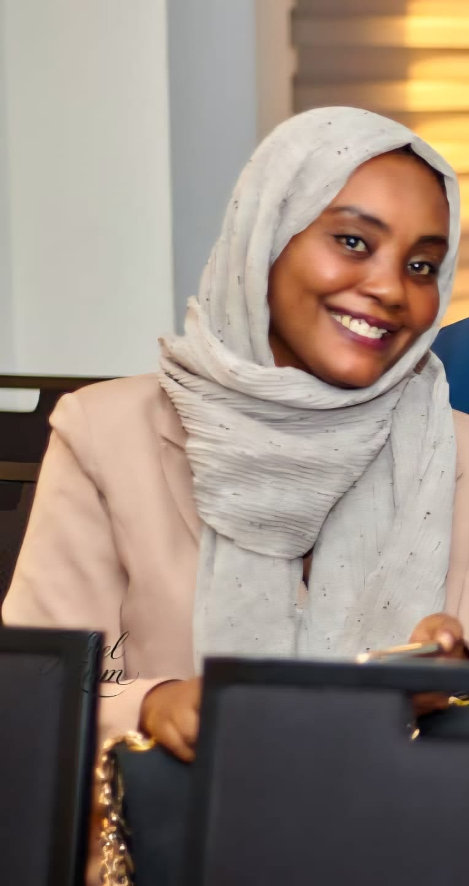
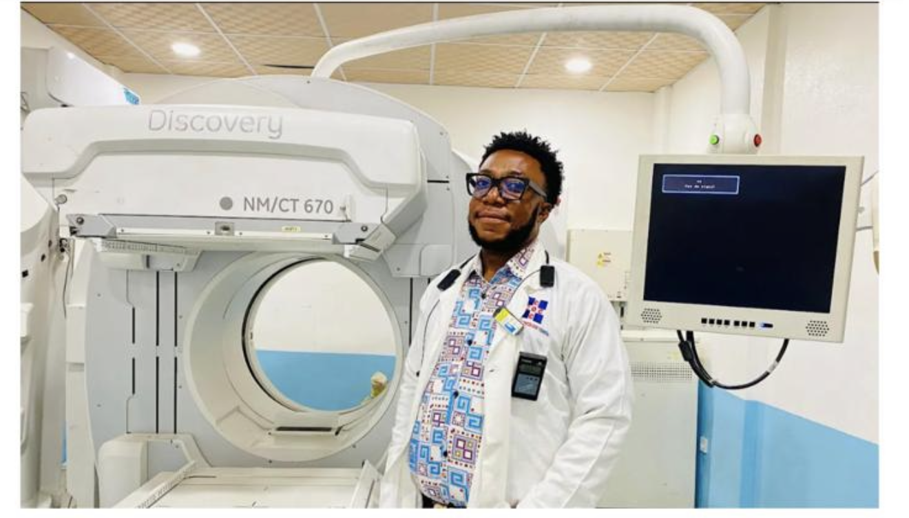
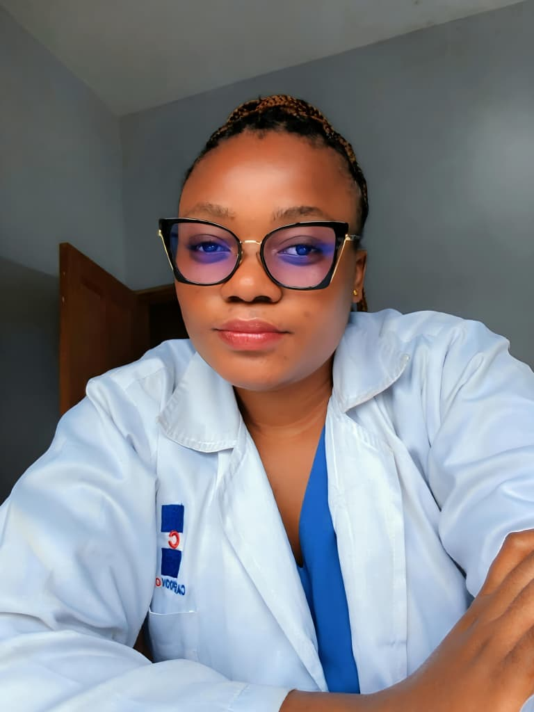
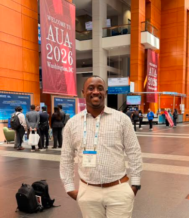
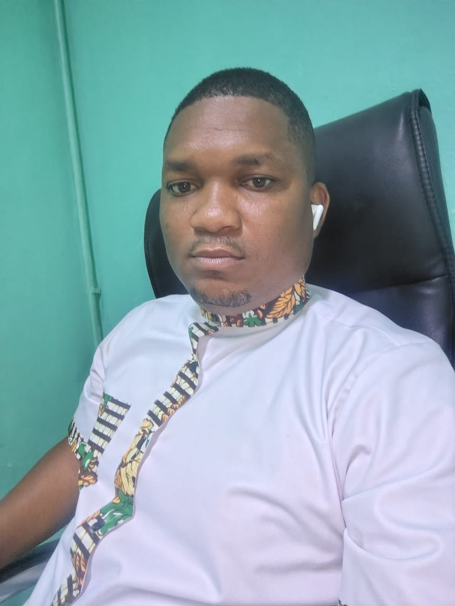
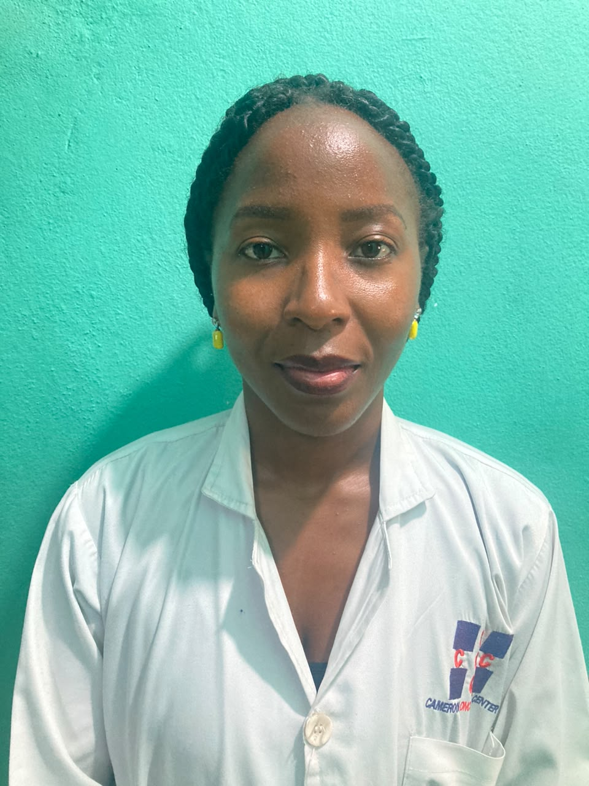
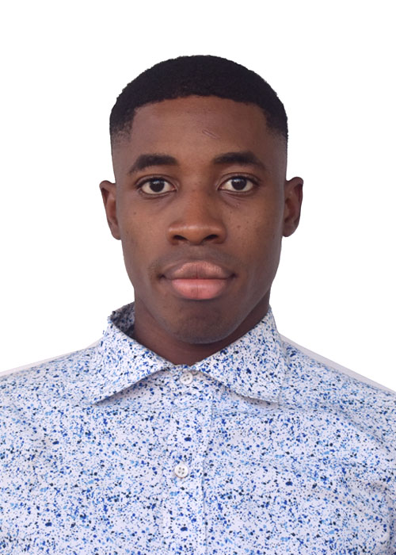
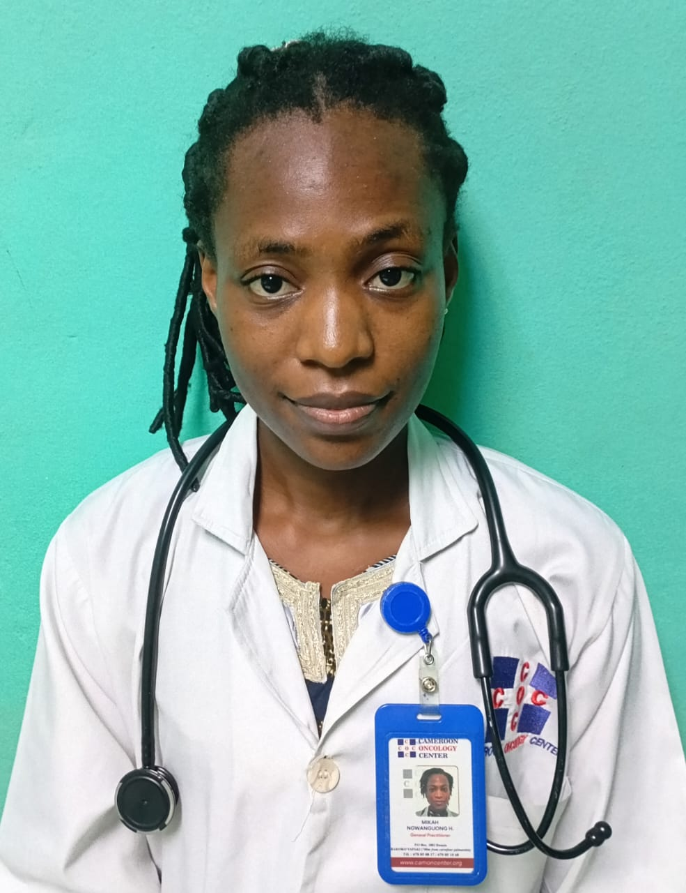
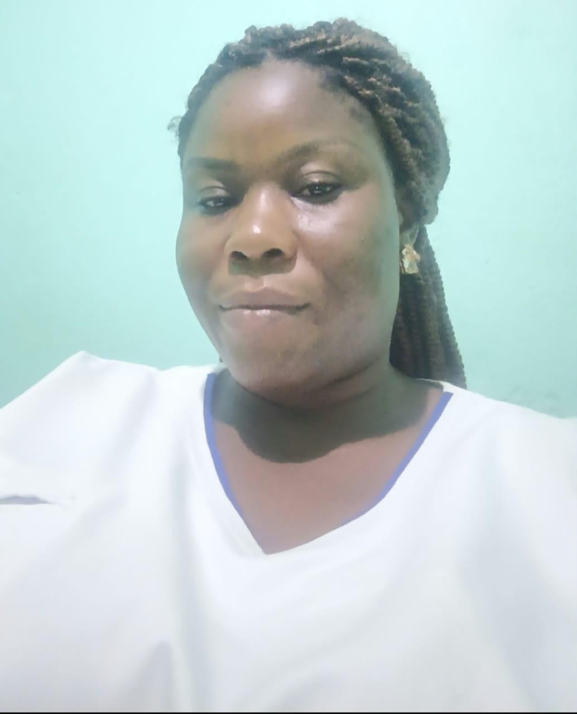

Explore our services
Radiation Oncology
External-beam radiotherapy, CT simulation, treatment planning and physics quality assurance.
Learn more →
Medical Oncology
Chemotherapy, targeted treatment and other systemic anticancer therapies.
Learn more →












Oncology Nurse Navigation
Closed-loop navigation from entry through treatment and follow-up.
Learn more →